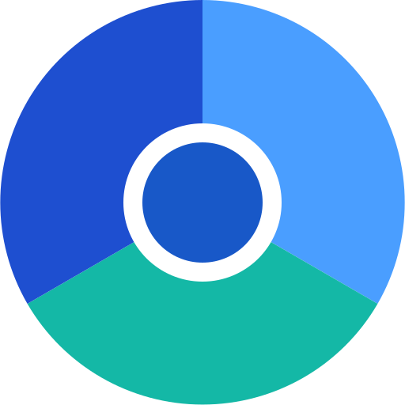

Project journal
Progress, with sources.
A running record of what changed, what is still in motion, and where each update comes from.

ZeroWebProject journal
A running record of what changed, what is still in motion, and where each update comes from.